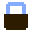
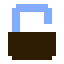
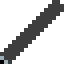
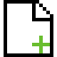

The To-Do tab allows you to create and manage multiple to-do lists each with its own tasks, progress tracking, and customizable name. Everything you create is stored locally on your device, so your lists will automatically reload the next time you open the page. -Main Features- Multiple To-Do Lists Create unlimited lists using Add New List Each list has its own name, task count, and independent tasks -Task Management- Add tasks using the + button at the bottom of each list Each task includes: A checkbox to mark it done A text field for the task description A delete button (✖) to remove the task instantly Tasks automatically update the list’s done / total counter Completed tasks visually change style for clarity -List Controls- Rename lists directly by editing their name field Delete an entire list with the ✖ button (with confirmation) Add tasks at any time -Global Actions- → Saves all your lists and tasks into a .json file → Import a previously exported file

/
→ Prevents deleting lists or tasks while locked -Notes- All data is saved automatically to Local Storage Nothing is uploaded anywhere — your lists remain on your own deviceThe Time tab provides two tools: the Pomodoro Timer and the Standard Timer designed to help with productivity, focus, and general time-tracking. All settings, timers, and progress are stored locally on your device, meaning nothing is uploaded and everything is preserved even if you refresh or close the page. -Pomodoro Timer- A productivity timer based on alternating work and break sessions. Customizable work, short break, and long break durations Automatic cycling between sessions Start / Pause / Reset controls A sound plays when a session finishes -Standard Timer- A simple and flexible countdown timer. Set any custom hours, minutes, and seconds Start / Pause / Reset controls if hours/minutes/seconds are 0, then it will count up A sound plays when the timer reaches zero -Note- Audio alerts require the browser to allow sound playback.
This notepad lets you create, edit, rename, delete, upload, and download notes all stored safely on your device. No data ever leaves your machine, and nothing is uploaded anywhere unless you choose to download or upload files yourself. -Features- Multiple Notes: Create as many notes as you want using the New Note button. Local Storage Saving: Notes are automatically saved to your browser’s local storage. Closing or refreshing the page will NOT delete your notes. Rename Notes: Click the note name to rename it instantly. Navigate Notes: Use the left and right arrow buttons to move between your notes. Delete Notes: Use the delete button to remove the current note. You will be asked to confirm before it is deleted. Download Notes: Save the current note as a .txt file to your device. Upload Notes: Load a .txt file from your computer and turn it into a new note. Clean and Simple: Everything happens instantly and on your device only. -Buttons- ◀ / ▶ Arrows: Switch between your notes. Delete: Deletes the current note after confirmation.

Rename: Click the note name to edit it.
New Note: Creates a fresh empty note. Download: Saves the current note as a file. Upload: Adds a note from a file on your device. -Privacy / Storage- All notes stay entirely on your device using localStorage. Nothing is sent online, and no data leaves your browser unless you manually download or upload files.